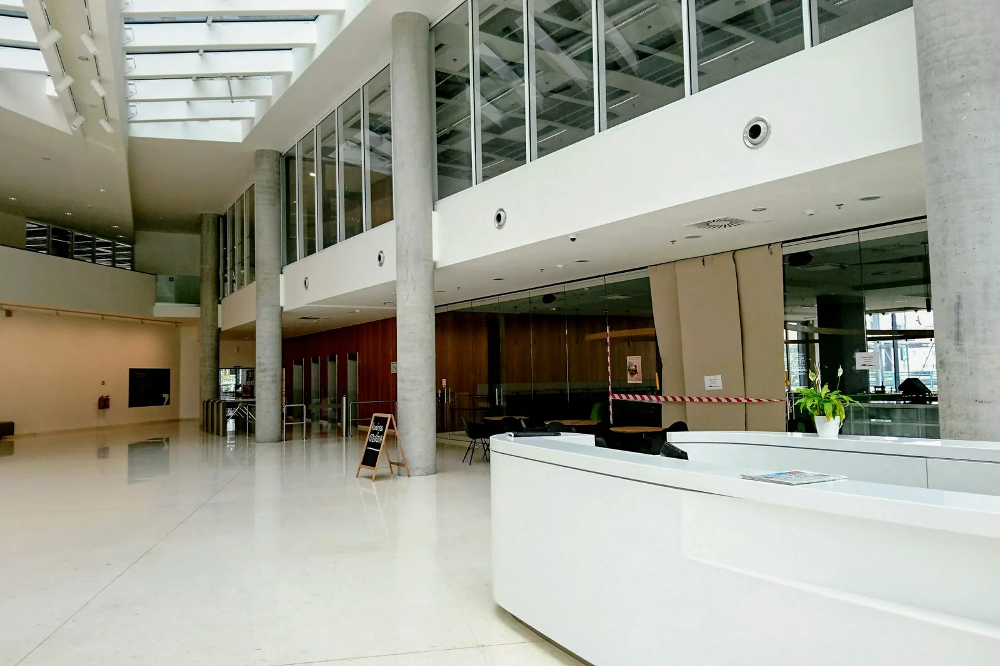
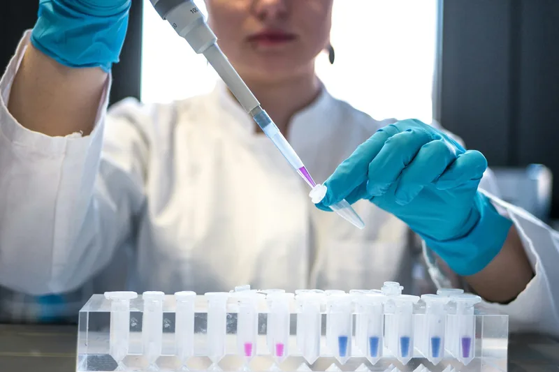
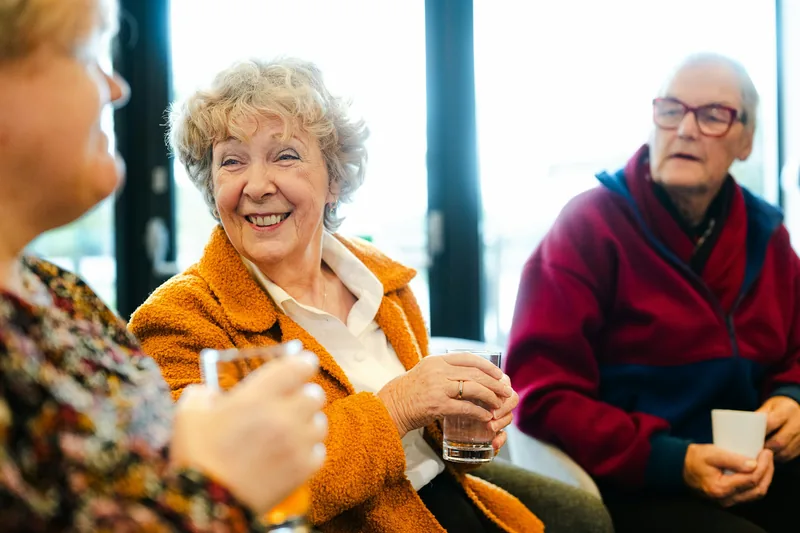

Kindness first
We learn your name, your worries and your routines, and we treat your family as part of the team.

About us
Since 2008 we have looked after people on dialysis in Chennai and Bengaluru, one familiar face at a time.
Our story
In 2008, Dr Mei Lin Chua and nurse Anita Joseph opened an eight-chair unit in Besant Nagar. They had seen too many patients rushed through dialysis in crowded wards, with no one explaining what was happening or why.
Their idea was simple: give every patient a named doctor and nurse, enough time to talk, and a calm room to rest in. Eighteen years later we care for more than 350 people across three centres, and that idea has not changed.
Mission and values
Our mission is to give every person on dialysis safe, unhurried treatment and the support to keep living the life they choose.
We learn your name, your worries and your routines, and we treat your family as part of the team.
Daily water tests, strict infection control and checklists for every connection, every session.
Results, risks and choices explained in simple words and your own language, with time for questions.
In-centre, home, peritoneal or overnight: we support the treatment that fits you, and help you change later.
Our journey
From one small unit to three centres, growing only as fast as we could keep care personal.
Our first unit opens in Chennai with one nephrologist, four nurses and a promise of named care.
We begin purifying and testing dialysis water on site every day, instead of relying on monthly outside checks.
Peritoneal and home haemodialysis training starts, so patients can dialyse around work and family.
A 14-chair unit in Indiranagar brings the same team approach to Karnataka.
Private overnight rooms open in Chennai for longer, gentler dialysis while patients sleep.
Our third centre opens closer to patients in west Chennai, with a CKD clinic and education room.
Patients can now book sessions, see results and manage bills online, any time.

Quality and safety
Good dialysis depends on clean water, well-kept machines and careful habits. We measure all three and share the results with patients each quarter.

Community
Every month, patients and families meet over tea to share tips, worries and good news. We also run free kidney screening camps and talks for schools and workplaces.
Standards and recognition
Independent checks keep us honest. Ask at reception to see our latest audit reports.
All three centres are accredited to national healthcare quality standards and reassessed every three years.
Our water and dialysis fluid meet the international limits for dialysis water quality.
Empanelled for CGHS, ECHS and the national dialysis programme where patients are eligible.
An anonymous survey after every quarter, with results shared on our noticeboards.
Come and meet us
Book a free visit to look around, meet a nurse and talk through your options. Families are always welcome.